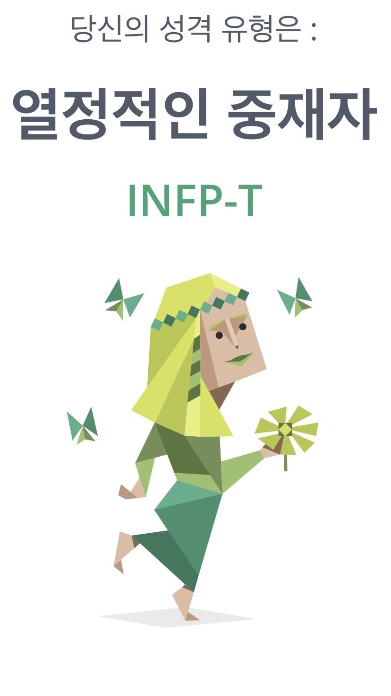
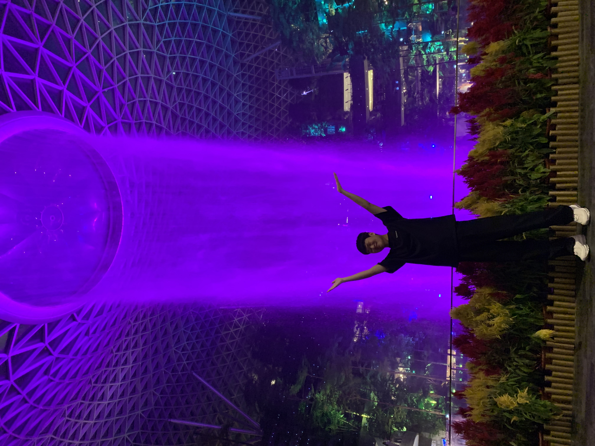

안녕하세요! 이번 멋사 11기 백엔드에 들어온 전자 및 정보공학과 김희재입니다.
우선 이렇게 새로운 분야에 대한 공부의 기회를 제공해준 백엔드 멘토님께 심심한 감사를 전합니다.
실패가 무서워 시도를 무서워하는 제 성격상 평소였다면 시도조차 해보지 않았을 겁니다.
이제 저에 대한 이야기를 해보겠습니다.

네 보시는것처럼 INFP입니다. infp는 이상적이고 본인에게 엄격해서 스트레스 많고 규칙적이고 반복적인 일상을 싫어한다고 합니다.
사실 성격유형 검사는 다들 중,고등학교때 자주 해보셨을텐데 저는 이런 결과 안믿었습니다.
다른사람을 설명해주는 느낌이 강하다 라는 느낌을 받았는데 mbti해보니까 네... 인터넷에 올라오는 infp에 대한 설명, 특징들은 모두 소름돋게 제 성격이었습니다.
남에게 민폐끼치는걸 싫어하는 성격상 조별과제를 개인과제보다 우선으로 하고 완벽주의 특성상 중간중간 실수를 못넘겨서 시간을 오래씁니다.
대인관계에서는 까다로우며 이상적인 인관관계를 꿈꾼다고 설명이 되어있는데 과거에는 설명 그대로였지만 현재는 많이 좋아졌습니다.
제 취미는 등산과 게임, 금전적으로 여유가 있으면 종종 여행을 가곤 합니다.

저곳은 싱가포르의 창이공항 안에 인공폭포입니다. 제일 최근에 간 여행지이고 제일 좋아하는 나라중 한곳입니다.
새로운 사람들 만나는걸 좋아하고 매일매일 특이한 경험을 하며 여러가지 문제를 해결해나가는게 좋아서 여행을 좋아합니다.
단점으로는 지갑에 구멍이 날수있다는것!!! 저도 중간에 계산을 잘못해서 국제미아가 될뻔했지만 여유자금으로 해결했습니다.
나머지 취미에 대해선 간략하게 설명하자면 눈오는 산들이 너무 예쁘고 고생한 다음 성취감이 너무 좋아서 등산을 좋아합니다, 그리고 친구들과 친목을 다질때는 주로 게임을 선호하는 편입니다.
한국에서 대프리카라고 불리는 대구에 고등학교 졸업까지 거주했습니다. 지역에 대해 설명해드리자면 동성로만 알고 계시는 분들이 많은데 유독 인기있어서 그렇지 다른곳도 정말 잘되있고 살기 좋은 지역 입니다.
단지 지역이 조금 따뜻해서 여름에 좀 힘듭니다. 정말 궁금해서 한여름 차 위에 계란을 올려봤는데 안에는 무리고 곁은 잘 익던 경험이 생각납니다.
누구 차량이냐고요? 아버ㅈ(아버지 사랑합니다.)
제 생각보다 사회는 훨씬 더 치열하며 낭만적이지 않을 테지만 개발자로써 창업을 하거나 기업에 들어가서 세계적으로 인정받는 성과를 내보는 것이 제 목표이며
미래에는 IOT쪽에서 프로그래밍을 하고 있지 않을까 생각합니다.
그리고 외국 기업에 나가서 더 많은 경험을 쌓고 싶습니다. 겸사겸사 중간에 해외여행도 다니며 지내는 것이 미래에 대한 꿈입니다.